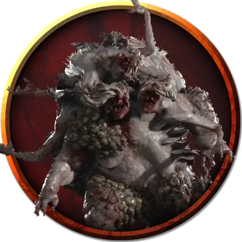

Ползающая насыпь зомби
Undead Shambling Mound
Большая Нежить, без мировоззрения

Класс Доспеха 15 (природный доспех)
Хиты 136 (16к10 + 48)
Скорость 20 футов, плавая 20 футов
| мод | спас | ||
|---|---|---|---|
| СИЛ | 18 | +4 | +4 |
| ЛОВ | 8 | −1 | −1 |
| ТЕЛ | 16 | +3 | +3 |
| мод | спас | ||
|---|---|---|---|
| ИНТ | 5 | −3 | −3 |
| МДР | 10 | +0 | +0 |
| ХАР | 5 | −3 | −3 |
Навыки Скрытность +2
Сопротивление урону огонь, холод
Иммунитет к урону некротическая энергия, яд
Иммунитет к состояниям глухота, истощение, ослепление, отравление
Чувства слепое зрение 60 футов (слеп за пределами этого радиуса), пассивное Восприятие 10
Опасность 5 (1800 опыта)
Бонус мастерства +3
Особенности
Поглощение некротической энергии. Каждый раз, когда ползающая насыпь должна получить урон некротической энергией, она не получает урон, и вместо этого восстанавливает число хитов, равное причиняемому урону некротической энергией.
Действия
Мультиатака. Ползающая насыпь совершает два размашистых удара. Если обе атаки попадают по цели с размером не больше Среднего, цель становится схваченной (Сл высвобождения 14), а ползающая насыпь использует против неё Поглощение.
Размашистый удар. Рукопашная атака оружием: +7 к попаданию, досягаемость 5 футов, одна цель. Попадание: 13 (2к8 + 4) дробящего урона.
Поглощение. Ползающая насыпь проглатывает схваченное существо с размером не больше Среднего. Проглоченное существо опутано, ослеплено, не может дышать, и должно преуспевать в спасброске Телосложения Сл 14 в начале каждого хода насыпи, иначе получает 13 (2к8 + 4) дробящего урона. Если насыпь движется, проглоченная цель перемещается вместе с ней. У насыпи может быть только одно проглоченное существо одновременно.